Faro,
Un programa de ciencia
Faros del pasado
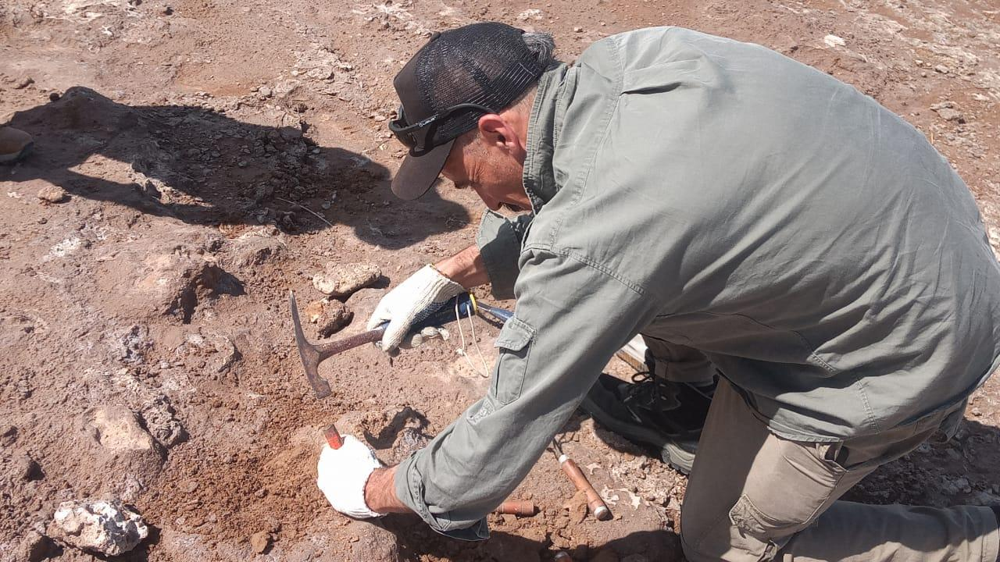
Programa 35 - 2022-11-24
Conversaremos con Lucas Cheme Arriaga sobre el reciente descubrimiento de un gliptodonte en la zona de la laguna de Utracán.
El Rescate paleontológico fue encontrado por el guía Marcelo Dolsan.
🧷 Encontró un cráneo y otros huesos de gliptodonte el pasado 7 de octubre en Ultracán, en la zona de General Acha.
El Rescate paleontológico fue encontrado por el guía Marcelo Dolsan.
🧷 Encontró un cráneo y otros huesos de gliptodonte el pasado 7 de octubre en Ultracán, en la zona de General Acha.
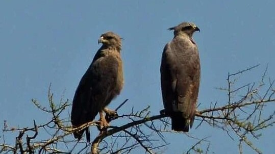
Programa 33 - 2022-11-03
Este Jueves tendremos en los estudios de Radio Noticias a Jose Sarazola, perteneciente al Centro para el Estudio y Conservación de las Aves Rapaces (Cecara) de la Universidad Nacional de La Pampa y del Conicet.
El cuidado de la especie del Aguila Coronada y otras aves rapaces. se encuentran en peligro por el proyecto de recambio de línea eléctrica en el trazado Padre Buodo Peru.
El cuidado de la especie del Aguila Coronada y otras aves rapaces. se encuentran en peligro por el proyecto de recambio de línea eléctrica en el trazado Padre Buodo Peru.
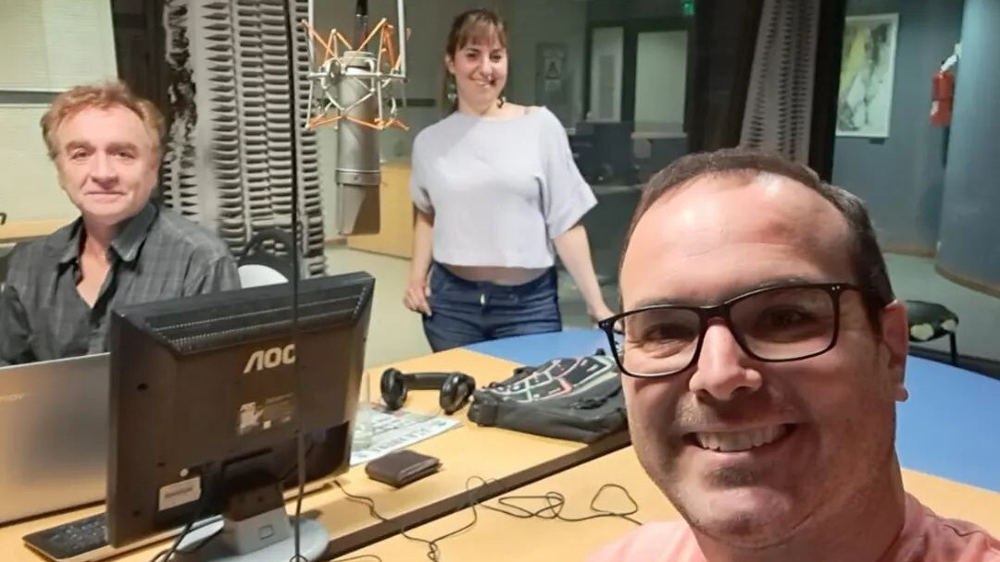
Programa 32 - 2022-10-27
Hoy conversamos con Gabriela Ensinck, periodista y autora del libro "Economía Verde"
En el marco del primer congreso de Santa Rosa ambiental Gabriela nos adelanto el café ambiental del que forma parte junto al Dr Maximiliano García y la Dr Florencia Ricard.
El Café Ambiental se titula Economía Verde/ innovación/ sustentabilidad / comunicación.
Se realizará en la Casa del Bicentenario a las 14 horas y en abierta al público.
En el marco del primer congreso de Santa Rosa ambiental Gabriela nos adelanto el café ambiental del que forma parte junto al Dr Maximiliano García y la Dr Florencia Ricard.
El Café Ambiental se titula Economía Verde/ innovación/ sustentabilidad / comunicación.
Se realizará en la Casa del Bicentenario a las 14 horas y en abierta al público.
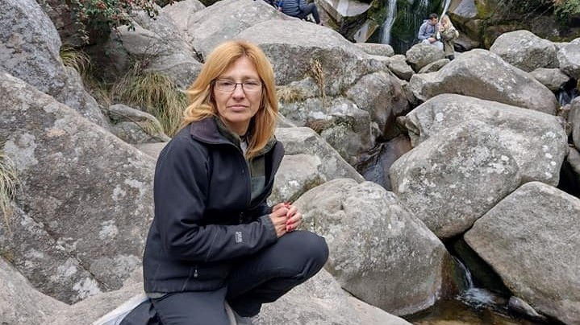
Programa 31 - 2022-10-20
La entrevistada de esta tarde será Luciana Deladino, la geóloga pampeana que detectó y confirmó la presencia de estratos con mineralizaciones de uranio-vanadio en el suroeste de la provincia, en más de 25 pozos petrolíferos.
Después vamos a hablar de los resultados de la última encuesta de Percepción de la Ciencia, del descubrimiento de agujero negro más cercano a nuestro Sistema Solar, y de la creación de la empresa nacional Cannabis Conicet.
El componente musical va a estar nuevamente dominado por bandas y creadores pampeanos, en este caso, con una agradable sorpresa: vamos a tener el privilegio de compartir varios temas de una banda española llamada "100 de los grandes" donde toca y compone el músico santarroseño Javier Litterini.
Después vamos a hablar de los resultados de la última encuesta de Percepción de la Ciencia, del descubrimiento de agujero negro más cercano a nuestro Sistema Solar, y de la creación de la empresa nacional Cannabis Conicet.
El componente musical va a estar nuevamente dominado por bandas y creadores pampeanos, en este caso, con una agradable sorpresa: vamos a tener el privilegio de compartir varios temas de una banda española llamada "100 de los grandes" donde toca y compone el músico santarroseño Javier Litterini.

Programa 30 - 2022-10-13
Sin descripción
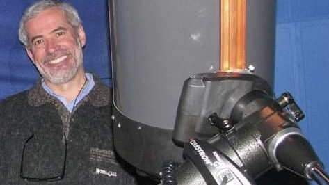
Programa 29 - 2022-09-29
El exitoso impacto de la nave DART contra el asteroide Dydimos/Dymorphos será el tema central en nuestra edición de El Faro de esta tarde.
Para hablar de este primer intento de la Humanidad de desviar un asteroide, hablaremos con Carlos Colazo, uno de los fundadores del Grupo Observadores de Rotaciones de Asteroides (GORA).
Carlos profesor de física y aficionado a la astronomía. Colabora activamente en diferentes búsquedas de asteroides.
Además, en el año 2006 construyó su propio observatorio astronómico llamado "El Gato Gris", en la localidad de Tanti, provincia de Córdoba. Actualmente, posee un telescopio de gran tamaño y cámaras astronómicas que le permiten colaborar con mediciones científicas de asteroides para los principales centros astronómicos del mundo.
Para hablar de este primer intento de la Humanidad de desviar un asteroide, hablaremos con Carlos Colazo, uno de los fundadores del Grupo Observadores de Rotaciones de Asteroides (GORA).
Carlos profesor de física y aficionado a la astronomía. Colabora activamente en diferentes búsquedas de asteroides.
Además, en el año 2006 construyó su propio observatorio astronómico llamado "El Gato Gris", en la localidad de Tanti, provincia de Córdoba. Actualmente, posee un telescopio de gran tamaño y cámaras astronómicas que le permiten colaborar con mediciones científicas de asteroides para los principales centros astronómicos del mundo.

Programa 28 - 2022-09-22
Sin descripcion
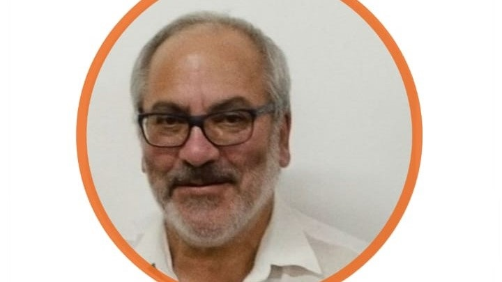
Programa 27 - 2022-09-15
El geólogo Carlos Camilletti será nuestro entrevistado de esta emisión de El Faro, un programa de ciencia.
Con "Charly" Camilletti hablaremos de lo que será la conferencia plenaria del jueves próximo en el marco de las décimoterceras Jornadas Pampeanas de Ciencias Naturales, en las que disertará sobre el deterioro que exhibe el acuífero Toay – Santa Rosa.
También repasaremos el desarrollo de esas Jornadas y compartiremos temas de actualidad y algunas de las muchas novedades científicas de la semana.
Con "Charly" Camilletti hablaremos de lo que será la conferencia plenaria del jueves próximo en el marco de las décimoterceras Jornadas Pampeanas de Ciencias Naturales, en las que disertará sobre el deterioro que exhibe el acuífero Toay – Santa Rosa.
También repasaremos el desarrollo de esas Jornadas y compartiremos temas de actualidad y algunas de las muchas novedades científicas de la semana.
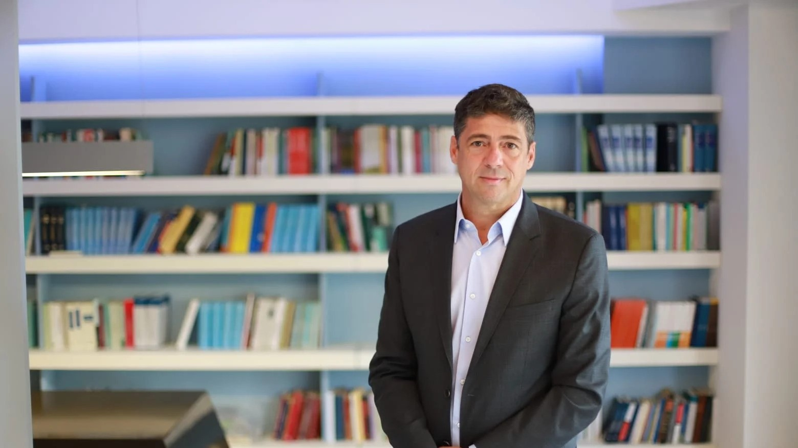
Programa 26 - 2022-09-08
Recientemente fue lanzada la nueva Agencia Neuquina de Innovación para el Desarrollo.
En la tarde de hoy entrevistamos a Pablo Gutiérrez Colantuono, Secretario de la Secretaría de Estado de Planificación y Acción para el Desarrollo (COPADE) del gobierno de Neuquén para conversar sobre esta nueva institución y sus implicancias tanto a nivel nacional como a nivel regional.
En la tarde de hoy entrevistamos a Pablo Gutiérrez Colantuono, Secretario de la Secretaría de Estado de Planificación y Acción para el Desarrollo (COPADE) del gobierno de Neuquén para conversar sobre esta nueva institución y sus implicancias tanto a nivel nacional como a nivel regional.
Programa 25 - 2022-09-01
Ninguna descripción
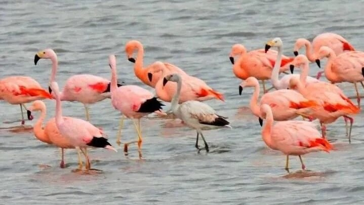
Programa 24 - 2022-08-25
Charlamos con Miguel Santillan, ténico del museo de historia natural sobre el descubrimiento de los flamencos andinos en nuestra provincia.
Programa 23 - 2022-08-11
En la emisión de esta tarde tendremos dos entrevistados. En primer lugar, el profesor en Matemática Cristian Scarola, docente en la Facultad de Ciencias Exactas y Naturales y delegado en nuestra provincia de la Unión Matemática Argentina.
Con Cristian hablaremos de la Competencia Interuniversitaria Matemática Argentina que tendrá lugar el miércoles 24 de agosto, de la cual participarán alumnos de la Licenciatura y el Profesorado en Matemática de nuestra universidad.
A las 21.00 tendremos al aire al ingeniero Fernando Stachiotti, director de Gobierno de la Agencia de Ciencias, Tecnologías e Innovación Abierta del gobierno pampeano, quien mañana viernes al mediodía brindará una charla sobre la Agencia, sobre el Polo Científico Tecnológico de General Pico y las convocatorias que tiene en marcha ese organismo para fomentar la creación de empresas de base tecnológica.
Con Cristian hablaremos de la Competencia Interuniversitaria Matemática Argentina que tendrá lugar el miércoles 24 de agosto, de la cual participarán alumnos de la Licenciatura y el Profesorado en Matemática de nuestra universidad.
A las 21.00 tendremos al aire al ingeniero Fernando Stachiotti, director de Gobierno de la Agencia de Ciencias, Tecnologías e Innovación Abierta del gobierno pampeano, quien mañana viernes al mediodía brindará una charla sobre la Agencia, sobre el Polo Científico Tecnológico de General Pico y las convocatorias que tiene en marcha ese organismo para fomentar la creación de empresas de base tecnológica.
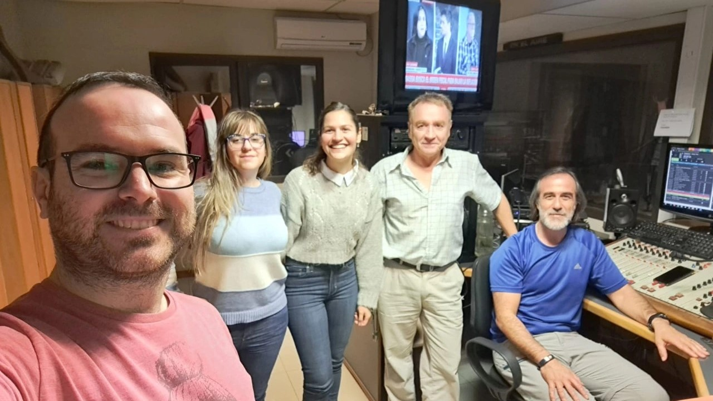
Programa 22 - 2022-08-04
Interesante y variada emisión número 22 del año de "El Faro, un programa de ciencia".
Mantuvimos una extensa entrevista con la flamante doctora Ana Paula Mansilla -egresada de la Facultad de Ciencias Exactas y Naturales y actual investigadora del Incitar-Conicet- en torno a su investigación doctoral sobre la ecología y dinámica de transmisión de los virus Saint Louis encephalitis y West Nile (Flavivirus) en los agroecosistemas de La Pampa. La conclusión central de la investigación, tal como nos contó Ana Paula en el estudio de Radio Noticias, es que los virus se encuentran presentes en aves pampeanas -la paloma torcaza en particular- y que se han diagnosticado casos aislados de encefalitis provocados por estos virus.
También entrevistamos a la doctora Analía Púgener, de la FCEyN, por el lanzamiento la semana que viene del curso de dibujo científico que va a dictar junto a la doctora Cecilia López Gregorio, también de Exactas y Naturales. Esta segunda edición del curso tuvo tan buena convocatoria que las docentes ya tienen reservas para un tercer curso. ¡Exitos, Analía y Cecilia! Esperamos ver pronto las producciones de los participantes.
Mantuvimos una extensa entrevista con la flamante doctora Ana Paula Mansilla -egresada de la Facultad de Ciencias Exactas y Naturales y actual investigadora del Incitar-Conicet- en torno a su investigación doctoral sobre la ecología y dinámica de transmisión de los virus Saint Louis encephalitis y West Nile (Flavivirus) en los agroecosistemas de La Pampa. La conclusión central de la investigación, tal como nos contó Ana Paula en el estudio de Radio Noticias, es que los virus se encuentran presentes en aves pampeanas -la paloma torcaza en particular- y que se han diagnosticado casos aislados de encefalitis provocados por estos virus.
También entrevistamos a la doctora Analía Púgener, de la FCEyN, por el lanzamiento la semana que viene del curso de dibujo científico que va a dictar junto a la doctora Cecilia López Gregorio, también de Exactas y Naturales. Esta segunda edición del curso tuvo tan buena convocatoria que las docentes ya tienen reservas para un tercer curso. ¡Exitos, Analía y Cecilia! Esperamos ver pronto las producciones de los participantes.
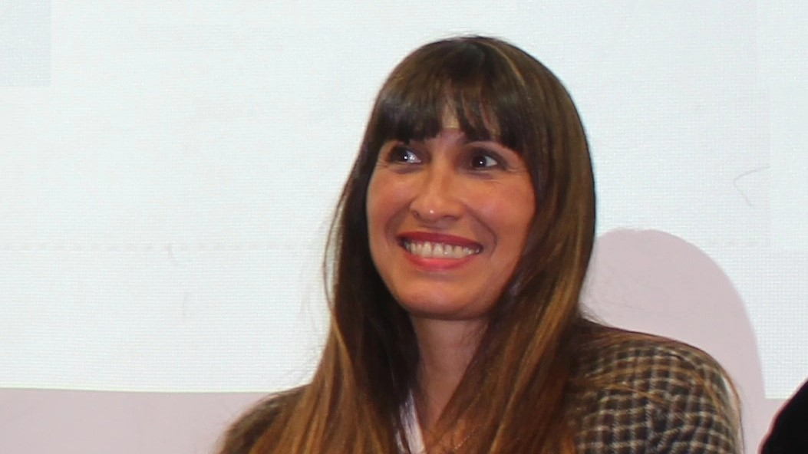
Programa 21 - 2022-07-28
Nuestra emisión número 21 del año tuvo como entrevista central a la Diplomatura en Manejo Integral del Pie Diabético que comenzará el lunes 1 de agosto en forma virtual. Se trata de una diplomatura orientada a profesionales de la Salud que organizaron la Sociedad Argentina de Diabetes y la Facultad de Ciencias Exactas y Naturales de la UNLPam. La médica piquense Erica Lorena Witman nos contó de la Diplomatura y también del impacto de la diabetes en la sociedad actual.
Además de anunciar varias actividades promovidas desde la Universidad Nacional de La Pampa, comentamos que ya tiene fecha para fines de agosto el lanzamiento del supercohete con el cual la Nasa quiere volver a poner un hombre o una mujer en la Luna, y el lanzamiento en nuestro país de un nuevo auto eléctrico.
Además de anunciar varias actividades promovidas desde la Universidad Nacional de La Pampa, comentamos que ya tiene fecha para fines de agosto el lanzamiento del supercohete con el cual la Nasa quiere volver a poner un hombre o una mujer en la Luna, y el lanzamiento en nuestro país de un nuevo auto eléctrico.
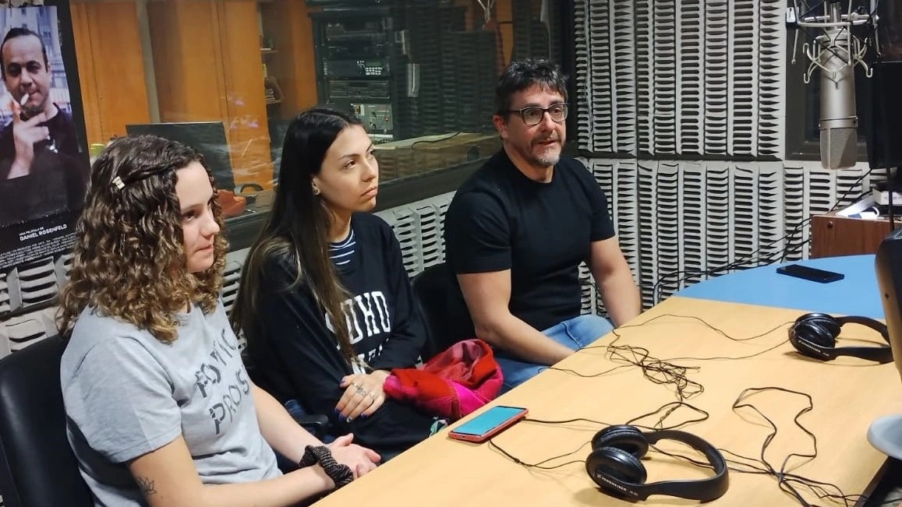
Programa 20 - 2022-07-14
Dos alumnas de la Licenciatura en Química, Candela Antón y Antonela Ojeda, visitaron el jueves 14 los estudios de Radio Noticias para participar de la emisión N° 20 de nuestro programa de divulgación científica "El Faro". Lo hicieron junto con el docente Luciano Merini.
Candela y Antonela están cursando el cuarto año de la Licenciatura en Química y en el marco de la materia Química Ambiental armaron un proyecto de trabajo denominado "¿Qué hacés con los medicamentos en desuso?".
Su objeto es conocer qué destino le da la gente a los medicamentos vencidos y aquellos que no se consumieron, y en función de ello informar sobre los programas existentes para el descarte de medicamentos.
Una encuesta realizada por las jóvenes detectó que el 67 por ciento de las personas tira los medicamentos vencidos a la basura, al inodoro o al lavabo.
En la emisión del jueves 14 también hablamos de la sorprendente calidad de las primeras imágenes que ha transmitido el supertelescopio James Webb, una calidad que ya anticipa que, como hace 30 años ocurrió con el observatorio Hubble, estamos a las puertas de una nueva revolución científica.
Candela y Antonela están cursando el cuarto año de la Licenciatura en Química y en el marco de la materia Química Ambiental armaron un proyecto de trabajo denominado "¿Qué hacés con los medicamentos en desuso?".
Su objeto es conocer qué destino le da la gente a los medicamentos vencidos y aquellos que no se consumieron, y en función de ello informar sobre los programas existentes para el descarte de medicamentos.
Una encuesta realizada por las jóvenes detectó que el 67 por ciento de las personas tira los medicamentos vencidos a la basura, al inodoro o al lavabo.
En la emisión del jueves 14 también hablamos de la sorprendente calidad de las primeras imágenes que ha transmitido el supertelescopio James Webb, una calidad que ya anticipa que, como hace 30 años ocurrió con el observatorio Hubble, estamos a las puertas de una nueva revolución científica.
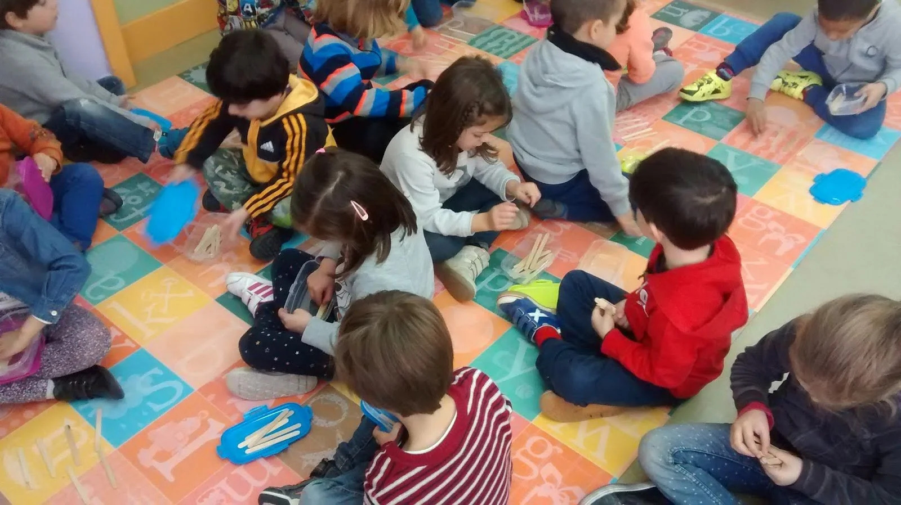
Programa 19 - 2022-07-07
Tal como lo anunciamos en nuestro programa del jueves pasado, la emisión de esta tarde de "El Faro, un programa de ciencia" va a estar centrada en el anuncio de la creación del primer Club de Ciencias Barrial de Santa Rosa.
Para ello, vamos a recibir en el estudio a Ricardo Caso y Rut Domínguez, de club de ciencias Amun Kamapu y creadores de la Red Arciteco; al concejal santarroseño Mariano Rodríguez Vega, uno de los impulsores de la creación de Programa Municipal de Clubes de Ciencia, y a Anabella Gómez, coordinadora del área municipal de Clubes de Ciencias.
Para ello, vamos a recibir en el estudio a Ricardo Caso y Rut Domínguez, de club de ciencias Amun Kamapu y creadores de la Red Arciteco; al concejal santarroseño Mariano Rodríguez Vega, uno de los impulsores de la creación de Programa Municipal de Clubes de Ciencia, y a Anabella Gómez, coordinadora del área municipal de Clubes de Ciencias.
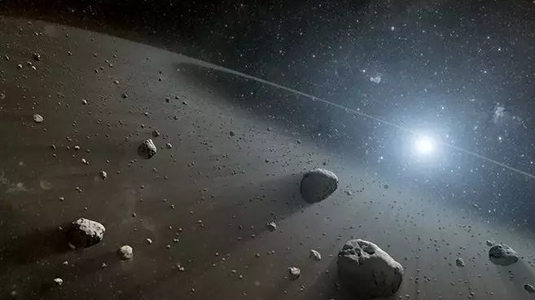
Programa 18 - 2022-06-30
Nuestro programa N° 18 del año estuvo centrado en una extensa entrevista con el profesor Mario Calafat, docente de las Facultades de Agronomía y de Ciencias Exactas y Naturales, sobre la carrera más reciente de la Universidad Nacional de La Pampa: la Tecnicatura en Tecnologías y Gestión de Alimentos. Con 250 alumnos al terminar este primer cuatrimestre de cursada, la Tecnicatura debió superar varios obstáculos para ponerse en marcha, principalmente los referidos a la cuestión tecnológica para dictar clases virtuales, ya que tiene cuatro sedes simultáneas: Santa Rosa, General Pico, Colonia Barón y La Adela.
Otro espacio destacado de nuestro décimo octavo Faro estuvo destinado a la mejor noticia de los últimos días: la creación del primer Club de Ciencias barrial de la ciudad de Santa Rosa, un tema que desarrollaremos en extenso en la emisión del jueves 7 de julio.
También te contamos por qué el 30 de junio es el Día Mundial de las Redes Sociales, el Día Mundial del Asteroide y del niño de 8 años que caminando por una playa de Santa Clara del Mar encontró aflorando entre la arena los restos fósiles de un camélido sudamericano de unos 700.000 años de antigüedad.
Otro espacio destacado de nuestro décimo octavo Faro estuvo destinado a la mejor noticia de los últimos días: la creación del primer Club de Ciencias barrial de la ciudad de Santa Rosa, un tema que desarrollaremos en extenso en la emisión del jueves 7 de julio.
También te contamos por qué el 30 de junio es el Día Mundial de las Redes Sociales, el Día Mundial del Asteroide y del niño de 8 años que caminando por una playa de Santa Clara del Mar encontró aflorando entre la arena los restos fósiles de un camélido sudamericano de unos 700.000 años de antigüedad.
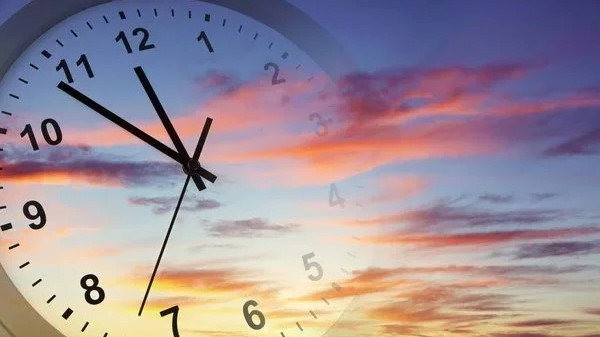
Programa 17 - 2022-06-23
Cambio en la medida de tiempo del segundo.
🕑 Estos momentos en la localidad de Sèvre, ubicada en Francia, se debate la redefinición del segundo. No tendrá incidencia en los el tiempo del segundo en un reloj, pero sí tendrá un impacto en la ciencia.
Esta noche en 'El Faro, un Programa de Ciencia' conversaremos con Diego Luna, profesional del INTI, dedicado a la Metrología sobre este tema.
Además, Héctor Laiz -gerente de Metrología y Calidad del Instituto Nacional de Tecnología Industrial (INTI)-, es el único representante sudamericano en el Comité desde el 2016 y es parte del equipo de 18 expertos que debaten la redefinición del segundo.
🕑 Estos momentos en la localidad de Sèvre, ubicada en Francia, se debate la redefinición del segundo. No tendrá incidencia en los el tiempo del segundo en un reloj, pero sí tendrá un impacto en la ciencia.
Esta noche en 'El Faro, un Programa de Ciencia' conversaremos con Diego Luna, profesional del INTI, dedicado a la Metrología sobre este tema.
Además, Héctor Laiz -gerente de Metrología y Calidad del Instituto Nacional de Tecnología Industrial (INTI)-, es el único representante sudamericano en el Comité desde el 2016 y es parte del equipo de 18 expertos que debaten la redefinición del segundo.